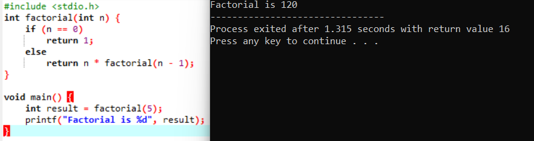
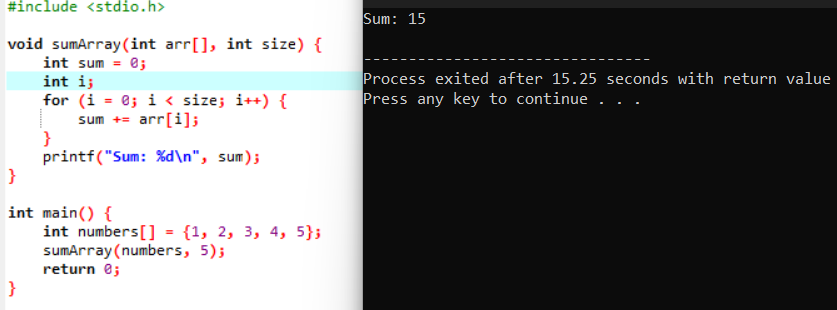

Syllabus
S.N.
|
Topic
|
Content - wise marks
|
Working Hours
|
| 1 |
Database Management System |
8 |
12 |
| 2 |
Data communication and networking |
9 |
15 |
| 3 |
Web Tech-II |
8 |
12 |
| 4 |
C programming-II |
8 |
12 |
| 5 |
Object Oriented programming |
6 |
10 |
| 6 |
Software development life cycle |
6 |
10 |
| 7 |
Recent trends in technology |
5 |
9 |
| Total |
50 |
80 |
Database management system
Introduction
Data
Data refers to raw, unprocessed facts and figures collected from various sources. It has no meaning on its own and requires context to become useful. Examples include numbers, names, dates, and measurements.
Information
Information is data that has been processed, organized, or structured in a way that adds meaning and makes it useful for decision-making. It helps individuals and organizations make informed choices based on facts.
Database
A database is a structured collection of related data that is stored electronically and can be accessed, managed, and updated easily. It allows for efficient storage, retrieval, and organization of large amounts of data.
Purpose of Database
The purpose of a database is to provide a systematic and organized way to store, manage, and retrieve data efficiently. It helps reduce data redundancy, ensures consistency, and supports multiple users in accessing data securely and concurrently.
Database Management System (DBMS)
Definition
A DBMS (DataBase Management System) is software that interacts with users, applications, and the database itself to store, retrieve, and manage data efficiently and securely.
Features of DBMS
- Data Integrity: Ensures accuracy and consistency of data.
- Security: Restricts unauthorized access to data.
- Backup & Recovery: Supports automatic data backup and restore mechanisms.
- Concurrency: Allows multiple users to access data simultaneously without conflicts.
- Data Independence: Applications remain unaffected by changes in database structure.
Advantages of DBMS
- Centralized Control: Manages data centrally for better consistency.
- Data Sharing: Multiple users can share data concurrently.
- Minimized Redundancy: Eliminates duplication of data.
- Easy Querying: Provides powerful query languages like SQL.
- Better Security: Offers role-based access control.
Disadvantages of DBMS
- Costly Setup: Initial installation and licensing can be expensive.
- Complexity: Requires skilled personnel to manage.
- Hardware Demands: Needs high-performance systems for large databases.
- Data Corruption Risk: A failure can affect the entire system.
- Frequent Maintenance: Regular updates and maintenance are essential.
Common Terminologies Related to DBMS
- Table: A table stores data in rows and columns. It represents a specific topic or entity, like students or books. Each row is a record, and each column is a field.
- Field: A field is a column in a table that stores one type of data, like a name or ID. All records in the table have the same fields.
- Record: A record is a row in a table that contains data about one item. For example, all details about one student form a record.
- Tuple: A tuple is another word for a record in a relational database. It refers to one complete row in a table.
- Objects: Objects combine data and actions in one unit. They are used in object-oriented databases to represent real-world entities.
- Keys: Keys are fields that uniquely identify records or link tables. Common types are primary keys and foreign keys.
- Data Dictionary: A data dictionary stores definitions and details of all data elements in the database. It helps manage the structure and rules of the database.
Types of Database
Hierarchical Model
The hierarchical model organizes data in a tree-like structure where each child record has only one parent, forming a strict one-to-many relationship. It is often used in applications with clearly defined parent-child relationships, such as organizational charts or file systems. This model enables fast access to data and simplifies referential integrity. The structure resembles a tree with branches, making it efficient for traversing fixed, predictable paths of information.
Advantages
- High performance for queries on hierarchical relationships
- Data integrity is strongly maintained through the tree structure
Network Model
The network model allows more flexible relationships by supporting many-to-many links between records. It organizes data as records connected by links, forming a graph structure instead of a strict hierarchy. This model is effective for complex applications like telecommunications or transport systems, where entities may relate to multiple other entities. It reflects a mesh-like structure, enabling more dynamic and interconnected data paths.
Advantages
- Supports complex relationships and data access paths
- Efficient for handling large networks of related data
Relational Model
The relational model stores data in tables (relations), where each row represents a record and each column corresponds to a field. This model is the most widely used due to its simplicity, flexibility, and use of SQL for querying. It relies on keys to manage relationships and ensures data accuracy through normalization and constraints. Much like a structured ledger or spreadsheet, it allows for logical organization of diverse data sets in an accessible format.
Advantages
- Easy to understand and implement using standard query languages
- Ensures data accuracy and reduces redundancy through normalization
Entity-Relational Model
The E-R model is a high-level conceptual data model that illustrates entities (objects) and the relationships between them. It is primarily used in the database design phase to map out how data components interact before implementing the structure in a relational model. By representing data through diagrams, it helps identify logical groupings and associations. The model functions similarly to a blueprint in architecture, offering a clear representation of the data environment before construction.
Advantages
- Facilitates clear planning of complex data structures
- Enhances communication between developers and stakeholders during design
Integrity Constraints and Types
Integrity constraints are rules applied to database data to ensure accuracy, consistency, and validity throughout its lifecycle. They prevent invalid data entry and maintain reliable relationships between tables.
Domain Constraint
This restricts the type, format, and range of values that a field (attribute) can hold. For example, a "Date of Birth" field must contain valid dates only, ensuring data falls within a specific domain.
Entity Integrity Constraint
This ensures that every table has a primary key and that the primary key values are unique and not null. It guarantees that each record (entity) can be uniquely identified within a table.
Referential Integrity Constraint
This maintains consistency among related tables by ensuring that a foreign key value always points to an existing primary key value in the referenced table. It prevents orphan records and keeps relationships valid.
Key Constraints
Key constraints define one or more attributes as keys to uniquely identify tuples in a relation. Primary keys uniquely identify records, while candidate keys are potential primary keys, and alternate keys are candidate keys not chosen as primary.
Normalization
Normalization is a database design technique used to organize data to reduce redundancy and improve data integrity. It involves dividing large tables into smaller, related tables and defining relationships between them to ensure efficient data management.
Normal Forms
Normalization is carried out through a series of rules called normal forms, each with specific criteria to refine the database structure.
1NF (First Normal Form)
A table is in 1NF when all its columns contain atomic (indivisible) values, and each record is unique. It eliminates repeating groups and ensures that each field contains only one value.
2NF (Second Normal Form)
A table is in 2NF if it is in 1NF and all non-key attributes are fully functionally dependent on the primary key. This removes partial dependency, meaning no column depends on just part of a composite key.
3NF (Third Normal Form)
A table is in 3NF if it is in 2NF and all attributes are only dependent on the primary key, not on other non-key attributes. This eliminates transitive dependencies to further reduce redundancy.
Advantages
- Reduces data duplication, leading to efficient storage
- Improves data consistency and integrity
- Simplifies maintenance and updates by minimizing anomalies
Disadvantages
- Increased number of tables can lead to more complex queries
- May reduce performance due to multiple table joins
- Designing fully normalized databases requires careful planning and expertise
Centralized and Distributed Database
Centralized Database
A centralized database is stored and managed in a single location, typically on a central server. All users access the database through this server, ensuring data consistency and security. It simplifies management but can become a bottleneck if many users access it simultaneously.
Advantages
- Easier to manage and maintain due to a single data location
- Simplified security and backup processes
- Lower costs for hardware and infrastructure
Disadvantages
- Single point of failure risks data loss or downtime
- Limited scalability for large or global organizations
- Potential performance bottlenecks under heavy load
Distributed Database
A distributed database is spread across multiple locations or servers, allowing data to be stored and processed closer to where it is needed. Each site can operate independently, but they are interconnected to provide a unified view of the data. This model enhances performance and reliability by distributing the workload
Advantages
- Improved reliability and availability through data replication
- Faster access for users by storing data closer to their location
- Scalability to handle larger, geographically dispersed systems
Disadvantages
- More complex to design, implement, and manage
- Requires sophisticated synchronization and consistency controls
- Higher costs due to distributed hardware and network infrastructure
Database Security
Database security refers to the processes, policies, and technologies used to protect database systems from unauthorized access, misuse, or breaches. It ensures that sensitive data remains confidential, maintains its integrity, and is available when needed.
Challenges:
- Unauthorized Access: Preventing access by users without proper credentials
- SQL Injection: Protecting against malicious code inserted into queries
- Data Leakage: Avoiding unintended exposure of confidential data
- Insider Threats: Managing access even among trusted employees
- Backup Vulnerabilities: Ensuring stored backups are also secure from tampering
Security Measures:
- Authentication & Authorization: Verifying user identity and assigning appropriate access levels
- Encryption: Securing data during storage and transmission using cryptographic techniques
- Firewalls & Network Controls: Protecting database servers from external threats
- Audit Trails: Keeping logs of user activity to monitor suspicious behavior
- Regular Updates: Applying patches to fix vulnerabilities in DBMS software
Roles of DataBase Administrator (DBA):
- Access Control: Defining and managing user permissions and roles
- Monitoring Security Logs: Continuously reviewing activity logs for anomalies
- Backup & Recovery: Ensuring reliable and secure backups for disaster recovery
- Patch Management: Updating database software to prevent exploitation
- Policy Enforcement: Implementing security policies and compliance standards
DDL and DML language
DDL (Data Definition Language) is used to define and modify the structure of database objects such as tables, indexes, and schemas. Examples of DDL commands are CREATE, ALTER, and DROP. DML (Data Manipulation Language) deals with the manipulation of data stored in the database. Examples of DML commands are SELECT, INSERT, UPDATE, and DELETE. Together, DDL and DML help manage both the structure and the data of databases.
SQL Data Types
SQL data types define the kind of data that can be stored in each column of a table. They ensure data integrity and efficient storage. Data types include character strings, numbers, binary data, and dates. Choosing the right data type is important for database performance and accuracy. Below are some commonly used SQL data types and their purposes.
- CHAR: CHAR is a fixed-length string data type. It stores strings of a specified length, padding with spaces if needed. Suitable for storing codes or values with uniform length.
- VARCHAR: VARCHAR is a variable-length string data type. It only uses as much space as needed to store the actual characters. Ideal for storing names, addresses, or other variable-length text.
- BINARY: BINARY stores fixed-length binary data. It is used for storing byte sequences of a set size, such as hashes.
- VARBINARY: VARBINARY stores variable-length binary data. Useful for storing files, images, or other binary objects.
- TINYBLOB: TINYBLOB is a very small binary large object that can store up to 255 bytes of data. Often used for small files or binary flags.
- TINYTEXT: TINYTEXT stores a small amount of text data, up to 255 characters. Suitable for short descriptions or notes.
- TEXT: TEXT stores large amounts of text data, up to 65,535 characters. Commonly used for comments, articles, or large text blocks.
- LONGTEXT: LONGTEXT stores extremely large text data, up to 4GB. Useful for storing long documents or content like logs.
- Backup & Recovery: Ensuring reliable and secure backups for disaster recovery
- ENUM: ENUM is a string object with a predefined set of allowed values. Useful for storing options like status ('active', 'inactive').
- BIT: BIT stores bit-field values, typically used to represent boolean flags or bitmasks.
- Backup & Recovery: Ensuring reliable and secure backups for disaster recovery
- TINYINT: TINYINT is a very small integer data type that stores values from -128 to 127 (signed) or 0 to 255 (unsigned).
- BOOLEAN: BOOLEAN is used to store TRUE or FALSE values. It is generally implemented as TINYINT (1 or 0).
- Backup & Recovery: Ensuring reliable and secure backups for disaster recovery
- INTEGER: INTEGER (or INT) stores whole numbers within a larger range. It is commonly used for IDs, counters, and numeric data without decimals.
- FLOAT: FLOAT stores approximate numeric data with floating decimal points. It is useful for scientific calculations where precision can be flexible.
- Backup & Recovery: Ensuring reliable and secure backups for disaster recovery
- DOUBLE: DOUBLE stores double-precision floating-point numbers. Suitable for calculations that require more precision than FLOAT.
- DECIMAL: DECIMAL stores exact numeric data with fixed decimal points. It is ideal for financial calculations where precision is critical.
- DATE: DATE stores date values in the format YYYY-MM-DD. It is used to record calendar dates without time information.
- DATETIME: DATETIME stores both date and time information in the format YYYY-MM-DD HH:MM:SS. It is used when both date and time need to be recorded.
Data communication and networking
NOT YET
Web Tech-II
NOT YET
C Programming II
Functions
A function is a block of reusable code that performs a specific task.
It helps break a large program into smaller, manageable parts, making the code more organized, modular, and easier to maintain.
Syntax of Functions
The general syntax of a function in languages like C/C++ is:
return_type function_name(parameter_list)
{
// body of the function
}
For example:
int add(int a, int b)
{
return a + b;
}
Types of Functions
- Library Functions: These are pre-defined functions provided by programming languages. Examples include
printf(), scanf(), and sqrt().
- User-Defined Functions: These are functions created by the programmer to perform specific tasks according to the requirements of the program.
Components of a Function
i. Function Prototype
A function prototype declares the function to the compiler before its actual definition.
It specifies the function name, return type, and parameters. For example:
int add(int, int);
ii. Function Call
A function call is the statement used to execute the function. It passes the required arguments to the function. For example:
sum = add(5, 10);
iii. Function Definition
The function definition contains the actual body of the function — the statements that perform the task. For example:
int add(int a, int b)
{
return a + b;
}
iv. Return Type
The return type specifies the type of value that the function returns to the calling function.
For example, in int add(), the return type is int.
A function can also have a void return type if it does not return any value.
Storage Classes
i. Automatic Storage Class
The automatic storage class is the default for local variables declared inside a function or block.
These variables are created when the block is entered and destroyed when it is exited.
The keyword auto can be used but is usually omitted.
void main() {
auto int x = 10; // same as int x = 10;
}
ii. External Storage Class
The external storage class extends the visibility of a variable or function to all files in a program.
The keyword extern is used to declare a global variable or function that is defined in another file.
// File1.c
int count = 5;
// File2.c
extern int count;
void main() {
printf("%d", count);
}
iii. Register Storage Class
The register storage class tells the compiler to store the variable in a CPU register instead of RAM for faster access.
It is used for variables that are frequently accessed, like loop counters.
void main() {
register int i;
for (i = 0; i < 10; i++) {
printf("%d ", i);
}
}
iv. Static Storage Class
The static storage class retains the value of a variable between function calls.
A static variable inside a function keeps its previous value when the function is called again.
void counter() {
static int count = 0;
count++;
printf("%d\n", count);
}
Recursive Function
A recursive function is a function that calls itself to solve a problem by breaking it into smaller sub-problems.
Every recursive function must have a base condition to stop the recursion.
Syntax
return_type function_name(parameters) {
if (base_condition) {
return result;
} else {
return function_name(smaller_problem);
}
}
Example: Factorial using Recursion
#include
int factorial(int n) {
if (n == 0)
return 1;
else
return n * factorial(n - 1);
}
void main() {
int result = factorial(5);
printf("Factorial is %d", result);
}

Passing an Array to a Function
Arrays can be passed to a function by passing the array name, which acts as a pointer to its first element.
The function can then access and modify the array elements.
Example: Sum of Array Elements
#include
void sumArray(int arr[], int size) {
int sum = 0;
int i;
for (i = 0; i < size; i++) {
sum += arr[i];
}
printf("Sum: %d\n", sum);
}
int main() {
int numbers[] = {1, 2, 3, 4, 5};
sumArray(numbers, 5);
return 0;
}

Object oriented programming
NOT YET
Software development life cycle
NOT YET
Recent Trends in technology
NOT YET